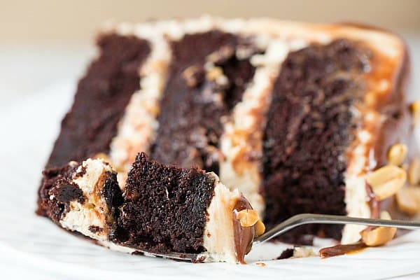

Porosit tani!
|
Snickers Cake
This irresistible Snickers Cake is made of layers of softest chocolate cake, salted caramel buttercream, peanut butter buttercream, salted caramel and generous amount of crushed peanuts! Step by step photos and video demo are included for your success! Yes, this cake is loaded with goodies and beyond indulgent. But it’s worth every single calorie!!! How can it not be, right?!
I made this cake early 2020 BC (before covid) and I’m SO excited to finally share the recipe with you today!
If baking has been your happy place in these strange times, I hope you’ll add this cake on to your list. It’s SO worth it!
Ingredients
- 2½ cups (312.5 g) + 1 tablespoon all-purpose flour
- 3 cups (600 g) granulated sugar
- 1 cup (86 g) + 1 tablespoon Dutch-process cocoa powder
- 1 tablespoon baking soda
- 1½ teaspoons (1.5 teaspoons) baking powder
- 1½ teaspoons (1.5 teaspoons) salt
- 3 eggs, at room temperatur
- 1½ cups (360 ml) buttermilk, at room temperature
- 1½ cups (355.5 ml) strong black coffee, hot
- 4½ teaspoons (4.5 teaspoons) vanilla extract
- ¾ cup (163.5 ml) vegetable oil
As is always the case, commemorating the birthday of someone who is no longer with us is bittersweet. I love to think about the time we shared, but of course wish that he were still here. It’s been a little over 14 years since he passed away and I was only a week past my 18th birthday when it happened. As I get closer to having spent just as much of my life without him as I did with him, it’s a strange feeling, but I continue to relish all of the wonderful memories of the time I did get to share with him. This cake is a celebration of that time, and of him.

|
|
|
- CAN THIS CAKE BE MADE IN DIFFERENT SIZE CAKE TINS?
- Yes! Please check the notes after the recipe at the bottom of this post for details. It can also be made with one layer.
- CAN THIS RECIPE BE MADE INTO CUPCAKES?
- Yes! If you would like to make this cake in different size tins, please check my Conversion Guide to find out how to adjust the recipe.
- HOW SHOULD THE CAKE BE STORED AND CAN IT BE FROZEN?
- You can freeze the buttercream on it’s own in a tub, or you can decorate the cake and freeze it fully assembled.
- WHAT CARAMEL SAUCE IS BEST TO USE?
- The cake will keep in an airtight container for 3 days in a cool place. You can freeze the sponges either alone, or decorated. Once the sponges are fully cool, wrap them well with cling film or put them in an airtight container with some baking paper between them.
- CAN THIS CAKE BE MADE WITH A PEANUT BUTTER SPONGE?
- his cake is definitely more about chocolate, with peanut flavour coming a close second. If you're looking for a cake where peanut butter come first and chocolate second.
|